前言
Map 这样的 Key Value 在软件开发中是非常经典的结构，常用于在内存中存放数据。
本篇主要想讨论 ConcurrentHashMap 这样一个并发容器，在正式开始之前我觉得有必要谈谈 HashMap，没有它就不会有后面的 ConcurrentHashMap。
HashMap
众所周知 HashMap 底层是基于 数组 + 链表 组成的，不过在 jdk1.7 和 1.8 中具体实现稍有不同。
Base 1.7
1.7 中的数据结构图：
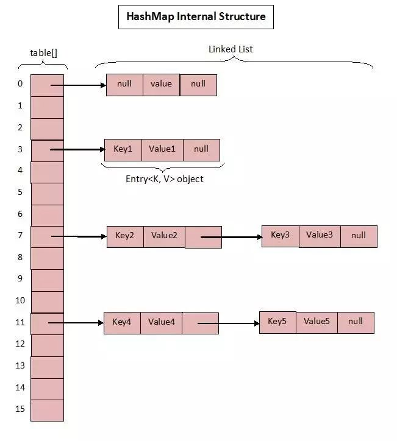
先来看看 1.7 中的实现。
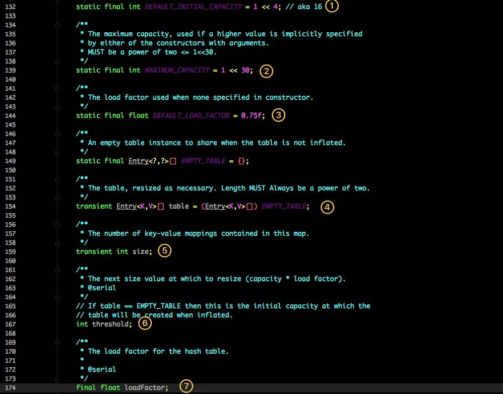
这是 HashMap 中比较核心的几个成员变量；看看分别是什么意思？
- 初始化桶大小，因为底层是数组，所以这是数组默认的大小。
- 桶最大值。
- 默认的负载因子（0.75）
table真正存放数据的数组。Map存放数量的大小。- 桶大小，可在初始化时显式指定。
- 负载因子，可在初始化时显式指定。
重点解释下负载因子：
由于给定的 HashMap 的容量大小是固定的，比如默认初始化：
1 | public HashMap() { |
给定的默认容量为 16，负载因子为 0.75。Map 在使用过程中不断的往里面存放数据，当数量达到了 16 * 0.75 = 12 就需要将当前 16 的容量进行扩容，而扩容这个过程涉及到 rehash、复制数据等操作，所以非常消耗性能。
因此通常建议能提前预估 HashMap 的大小最好，尽量的减少扩容带来的性能损耗。
根据代码可以看到其实真正存放数据的是
1 | transient Entry<K,V>[] table = (Entry<K,V>[]) EMPTY_TABLE; |
这个数组，那么它又是如何定义的呢？
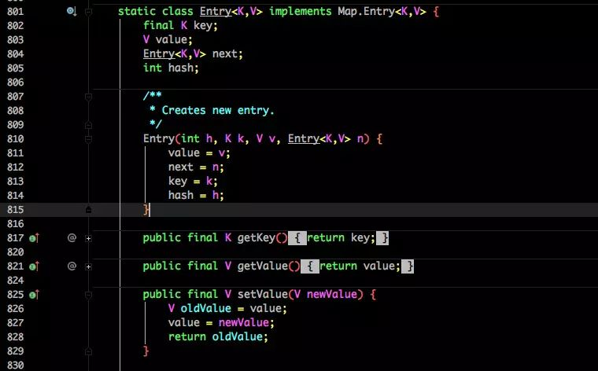
Entry 是 HashMap 中的一个内部类，从他的成员变量很容易看出：
- key 就是写入时的键。
- value 自然就是值。
- 开始的时候就提到 HashMap 是由数组和链表组成，所以这个 next 就是用于实现链表结构。
- hash 存放的是当前 key 的 hashcode。
知晓了基本结构，那来看看其中重要的写入、获取函数：
put 方法
1 | public V put(K key, V value) { |
- 判断当前数组是否需要初始化。
- 如果 key 为空，则 put 一个空值进去。
- 根据 key 计算出 hashcode。
- 根据计算出的 hashcode 定位出所在桶。
- 如果桶是一个链表则需要遍历判断里面的 hashcode、key 是否和传入 key 相等，如果相等则进行覆盖，并返回原来的值。
- 如果桶是空的，说明当前位置没有数据存入；新增一个 Entry 对象写入当前位置。
1 | void addEntry(int hash, K key, V value, int bucketIndex) { |
当调用 addEntry 写入 Entry 时需要判断是否需要扩容。
如果需要就进行两倍扩充，并将当前的 key 重新 hash 并定位。
而在 createEntry 中会将当前位置的桶传入到新建的桶中，如果当前桶有值就会在位置形成链表。
get 方法
再来看看 get 函数：
1 | public V get(Object key) { |
- 首先也是根据 key 计算出 hashcode，然后定位到具体的桶中。
- 判断该位置是否为链表。
- 不是链表就根据
key、key 的 hashcode是否相等来返回值。 - 为链表则需要遍历直到 key 及 hashcode 相等时候就返回值。
- 啥都没取到就直接返回 null 。
Base 1.8
不知道 1.7 的实现大家看出需要优化的点没有？
其实一个很明显的地方就是：
当 Hash 冲突严重时，在桶上形成的链表会变的越来越长，这样在查询时的效率就会越来越低；时间复杂度为
O(N)。
因此 1.8 中重点优化了这个查询效率。
1.8 HashMap 结构图：

先来看看几个核心的成员变量：
1 | 1 static final int DEFAULT_INITIAL_CAPACITY = 1 << 4; // aka 16 |
和 1.7 大体上都差不多，还是有几个重要的区别：
TREEIFY_THRESHOLD用于判断是否需要将链表转换为红黑树的阈值。- HashEntry 修改为 Node。
Node 的核心组成其实也是和 1.7 中的 HashEntry 一样，存放的都是 key value hashcode next 等数据。
再来看看核心方法。
put 方法
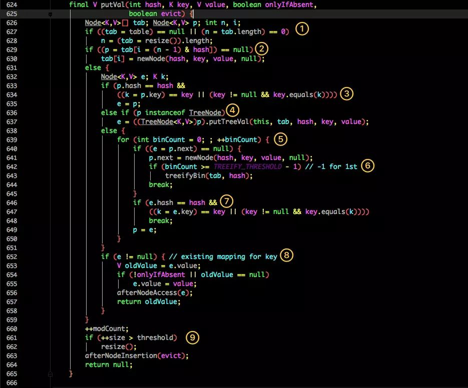
看似要比 1.7 的复杂，我们一步步拆解：
- 判断当前桶是否为空，空的就需要初始化（resize 中会判断是否进行初始化）。
- 根据当前 key 的 hashcode 定位到具体的桶中并判断是否为空，为空表明没有 Hash 冲突就直接在当前位置创建一个新桶即可。
- 如果当前桶有值（ Hash 冲突），那么就要比较当前桶中的
key、key 的 hashcode与写入的 key 是否相等，相等就赋值给e,在第 8 步的时候会统一进行赋值及返回。 - 如果当前桶为红黑树，那就要按照红黑树的方式写入数据。
- 如果是个链表，就需要将当前的 key、value 封装成一个新节点写入到当前桶的后面（形成链表）。
- 接着判断当前链表的大小是否大于预设的阈值，大于时就要转换为红黑树。
- 如果在遍历过程中找到 key 相同时直接退出遍历。
- 如果
e != null就相当于存在相同的 key,那就需要将值覆盖。 - 最后判断是否需要进行扩容。
get 方法
1 | 1 public V get(Object key) { |
get 方法看起来就要简单许多了。
- 首先将 key hash 之后取得所定位的桶。
- 如果桶为空则直接返回 null 。
- 否则判断桶的第一个位置(有可能是链表、红黑树)的 key 是否为查询的 key，是就直接返回 value。
- 如果第一个不匹配，则判断它的下一个是红黑树还是链表。
- 红黑树就按照树的查找方式返回值。
- 不然就按照链表的方式遍历匹配返回值。
从这两个核心方法（get/put）可以看出 1.8 中对大链表做了优化，修改为红黑树之后查询效率直接提高到了 O(logn)。
但是 HashMap 原有的问题也都存在，比如在并发场景下使用时容易出现死循环。
1 | 1 final HashMap<String, String> map = new HashMap<String, String>(); |
但是为什么呢？简单分析下。
看过上文的还记得在 HashMap 扩容的时候会调用 resize() 方法，就是这里的并发操作容易在一个桶上形成环形链表；这样当获取一个不存在的 key 时，计算出的 index 正好是环形链表的下标就会出现死循环。
如下图：


遍历方式
还有一个值得注意的是 HashMap 的遍历方式，通常有以下几种：
1 | 1 Iterator<Map.Entry<String, Integer>> entryIterator = map.entrySet().iterator(); |
强烈建议使用第一种 EntrySet 进行遍历。
第一种可以把 key value 同时取出，第二种还得需要通过 key 取一次 value，效率较低。
简单总结下 HashMap：无论是 1.7 还是 1.8 其实都能看出 JDK 没有对它做任何的同步操作，所以并发会出问题，甚至出现死循环导致系统不可用
因此 JDK 推出了专项专用的 ConcurrentHashMap ，该类位于 java.util.concurrent 包下，专门用于解决并发问题。
坚持看到这里的朋友算是已经把 ConcurrentHashMap 的基础已经打牢了，下面正式开始分析。
ConcurrentHashMap
ConcurrentHashMap 同样也分为 1.7 、1.8 版，两者在实现上略有不同。
Base 1.7
先来看看 1.7 的实现，下面是他的结构图：

如图所示，是由 Segment 数组、HashEntry 组成，和 HashMap 一样，仍然是数组加链表。
它的核心成员变量：
1 | /** |
Segment 是 ConcurrentHashMap 的一个内部类，主要的组成如下：
1 | static final class Segment<K,V> extends ReentrantLock implements Serializable { |
看看其中 HashEntry 的组成：
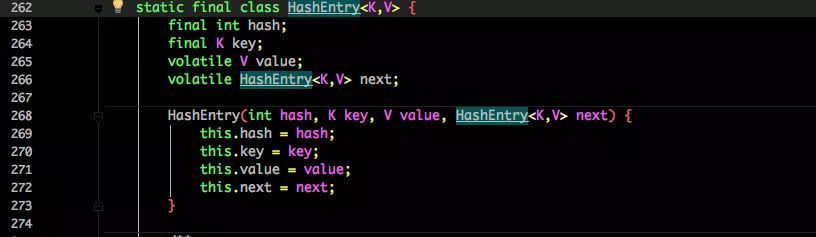
和 HashMap 非常类似，唯一的区别就是其中的核心数据如 value ，以及链表都是 volatile 修饰的，保证了获取时的可见性。
原理上来说：ConcurrentHashMap 采用了分段锁技术，其中 Segment 继承于 ReentrantLock。不会像 HashTable 那样不管是 put 还是 get 操作都需要做同步处理，理论上 ConcurrentHashMap 支持 CurrencyLevel (Segment 数组数量)的线程并发。每当一个线程占用锁访问一个 Segment 时，不会影响到其他的 Segment。
下面也来看看核心的 put get 方法。
put 方法
1 | public V put(K key, V value) { |
首先是通过 key 定位到 Segment，之后在对应的 Segment 中进行具体的 put。
1 | final V put(K key, int hash, V value, boolean onlyIfAbsent) { |
虽然 HashEntry 中的 value 是用 volatile 关键词修饰的，但是并不能保证并发的原子性，所以 put 操作时仍然需要加锁处理。
首先第一步的时候会尝试获取锁，如果获取失败肯定就有其他线程存在竞争，则利用 scanAndLockForPut() 自旋获取锁。
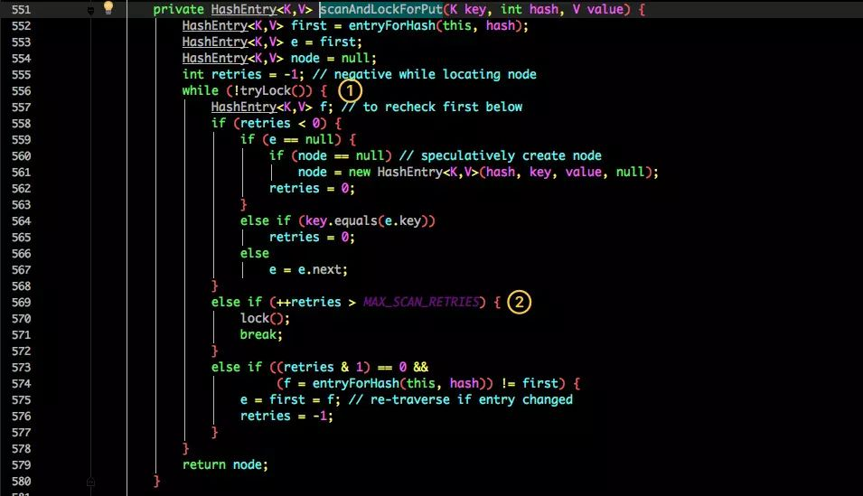
- 尝试自旋获取锁。
- 如果重试的次数达到了
MAX_SCAN_RETRIES则改为阻塞锁获取，保证能获取成功。
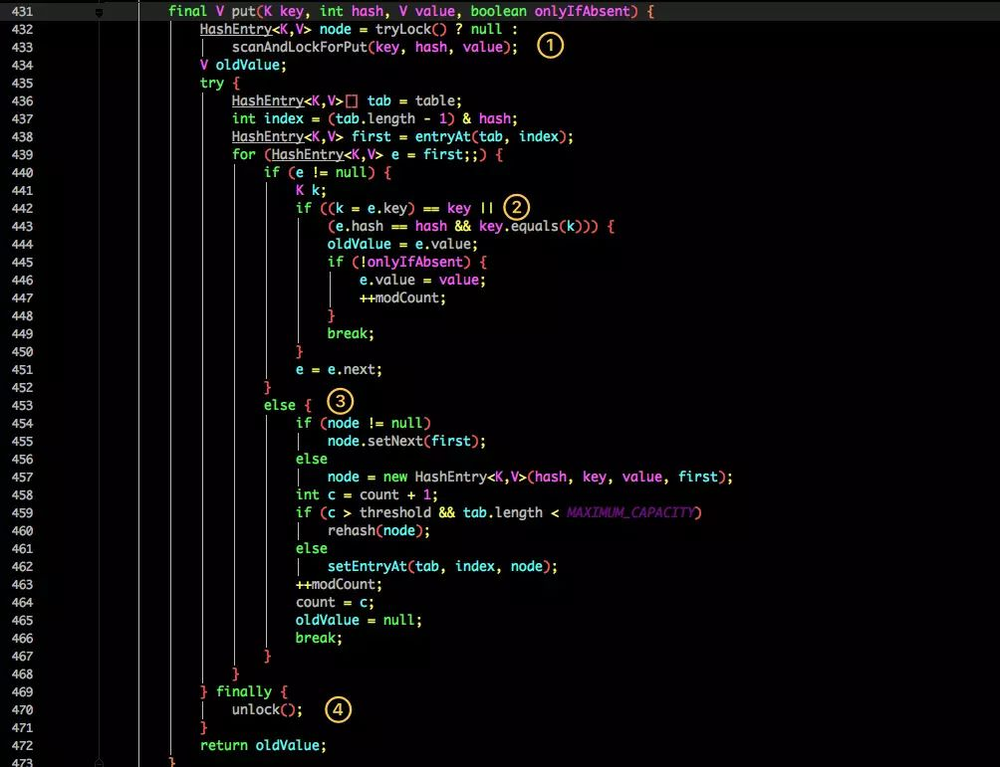
再结合图看看 put 的流程。
- 将当前 Segment 中的 table 通过 key 的 hashcode 定位到 HashEntry。
- 遍历该 HashEntry，如果不为空则判断传入的 key 和当前遍历的 key 是否相等，相等则覆盖旧的 value。
- 不为空则需要新建一个 HashEntry 并加入到 Segment 中，同时会先判断是否需要扩容。
- 最后会解除在 1 中所获取当前 Segment 的锁。
get 方法
1 | public V get(Object key) { |
get 逻辑比较简单：
只需要将 Key 通过 Hash 之后定位到具体的 Segment ，再通过一次 Hash 定位到具体的元素上。
由于 HashEntry 中的 value 属性是用 volatile 关键词修饰的，保证了内存可见性，所以每次获取时都是最新值。
ConcurrentHashMap 的 get 方法是非常高效的，因为整个过程都不需要加锁。
Base 1.8
1.7 已经解决了并发问题，并且能支持 N 个 Segment 这么多次数的并发，但依然存在 HashMap 在 1.7 版本中的问题。
那就是查询遍历链表效率太低。
因此 1.8 做了一些数据结构上的调整。
首先来看下底层的组成结构：
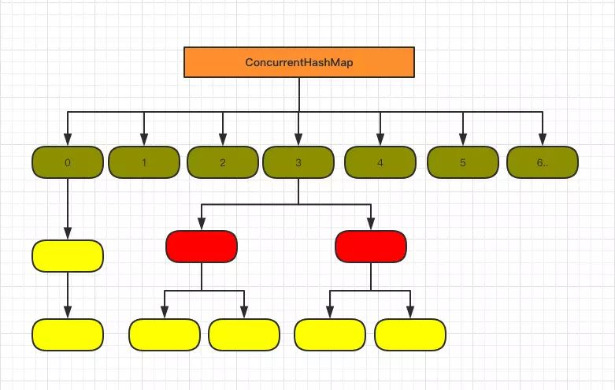
看起来是不是和 1.8 HashMap 结构类似？
其中抛弃了原有的 Segment 分段锁，而采用了 CAS + synchronized 来保证并发安全性。
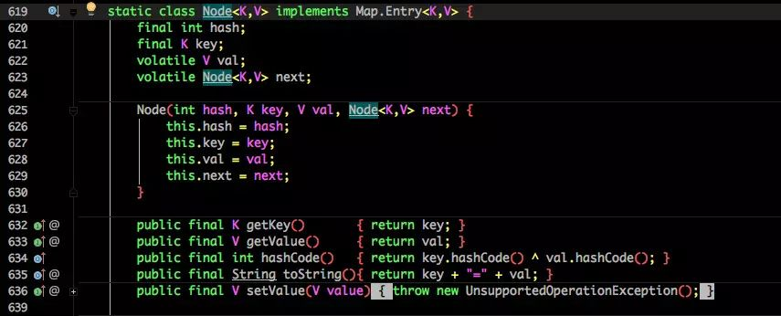
也将 1.7 中存放数据的 HashEntry 改为 Node，但作用都是相同的。
其中的 val next 都用了 volatile 修饰，保证了可见性。
put 方法
重点来看看 put 函数：
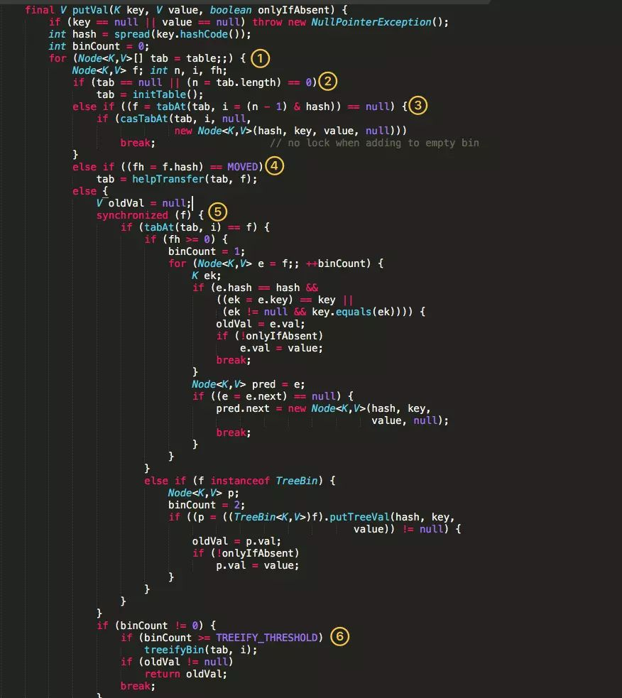
- 根据 key 计算出 hashcode 。
- 判断是否需要进行初始化。
f即为当前 key 定位出的 Node，如果为空表示当前位置可以写入数据，利用 CAS 尝试写入，失败则自旋保证成功。- 如果当前位置的
hashcode == MOVED == -1,则需要进行扩容。 - 如果都不满足，则利用 synchronized 锁写入数据。
- 如果数量大于
TREEIFY_THRESHOLD则要转换为红黑树。
get 方法
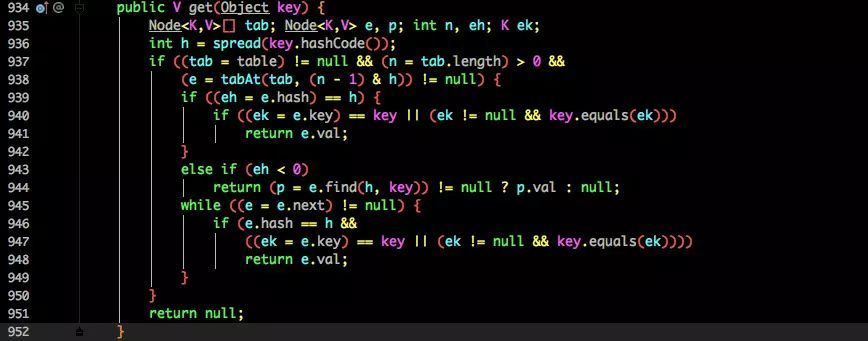
- 根据计算出来的 hashcode 寻址，如果就在桶上那么直接返回值。
- 如果是红黑树那就按照树的方式获取值。
- 就不满足那就按照链表的方式遍历获取值。
1.8 在 1.7 的数据结构上做了大的改动，采用红黑树之后可以保证查询效率（
O(logn)），甚至取消了 ReentrantLock 改为了 synchronized，这样可以看出在新版的 JDK 中对 synchronized 优化是很到位的。
总结
看完了整个 HashMap 和 ConcurrentHashMap 在 1.7 和 1.8 中不同的实现方式相信大家对他们的理解应该会更加到位。
其实这块也是面试的重点内容，通常的套路是：
- 谈谈你理解的 HashMap，讲讲其中的 get put 过程。
- 1.8 做了什么优化？
- 是线程安全的嘛？
- 不安全会导致哪些问题？
- 如何解决？有没有线程安全的并发容器？
- ConcurrentHashMap 是如何实现的？ 1.7、1.8 实现有何不同？为什么这么做？